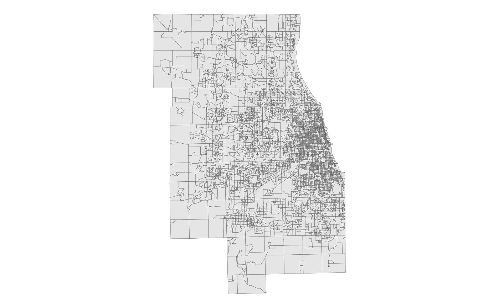

The Census Block Groups within the 7-county Chicago Metropolitan Agency for Planning (CMAP) region. From the US Census Bureau's TIGER/Line shapefiles, 2022 vintage.
blockgroup_sfblockgroup_sf is a multipolygon sf object with 6077
rows and 4 variables:
Unique 12-digit block group ID, assigned by the Census Bureau. The parent tract can be identified from the first 11 digits. Character.
Unique 5-digit FIPS code of the county the block group is in. Character.
Area in square miles. Double.
Feature geometry. sf multipolygon.
US Census Bureau TIGER/Line
Census Bureau description:
"Block Groups (BGs) are statistical divisions of census tracts, are generally defined to contain between 600 and 3,000 people, and are used to present data and control block numbering. A block group consists of clusters of blocks within the same census tract that have the same first digit of their four-digit census block number. For example, blocks 3001, 3002, 3003, ..., 3999 in census tract 1210.02 belong to BG 3 in that census tract. Most BGs were delineated by local participants in the Census Bureau’s Participant Statistical Areas Program (PSAP). The Census Bureau delineated BGs only where a local or tribal government declined to participate in PSAP, and a regional organization or the State Data Center was not available to participate. A BG usually covers a contiguous area. Each census tract contains at least one BG, and BGs are uniquely numbered within the census tract. Within the standard census geographic hierarchy, BGs never cross state, county, or census tract boundaries, but may cross the boundaries of any other geographic entity. Tribal census tracts and tribal BGs are separate and unique geographic areas defined within federally recognized American Indian reservations and can cross state and county boundaries. The tribal census tracts and tribal block groups may be completely different from the standard county-based census tracts and block groups defined for the same area."
# Display the block groups with ggplot2
library(ggplot2)
ggplot(blockgroup_sf) + geom_sf(lwd = 0.1) + theme_void()
